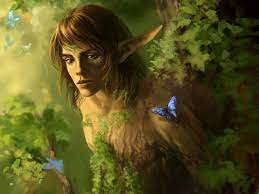

| Page 2 | Page 3 |
А́льви (давньосканд. álfar,álfafólk; в однині: álf) — у скандинавській мітології нижчі природні духи, аналог ельфів з ґерманської мітології. Як окремий різновид істот згадуються в «Едді», в інших випадках вважаються тим самим, що й ельфи. Культ альвів походить із анімістичних вірувань у духів природи та мертвих, пов'язаних із культом родючості.
Відомості про альвів у скандинавській мітології не систематичні. В «Старшій Едді» часто повторюється формула «Аси та Альви» (æsir ok álfar), що імовірно означає «усі боги», в такому випадку альви ототожнюються із ванами. Однак у «Промові Альвіса» альви вказуються як відмінні від ванів та всів, і вони мають власні назви для речей. Це, ймовірно, відображає відмінності у статусі між ванами як головними богами родючості та альвами як другорядними.
Ван Фрейр був паном Альвгейму («Дім Альвів») та мав двох слуг-альвів, Биґґвір та Бейла. Деякі дослідники припускають що вани та альви належать до ранішої релігії Бронзової доби, та згодом були витіснені асами як головними богами. Інші вважають, що вани були богами простого народу, а аси — богами жерців та касти воїнів.